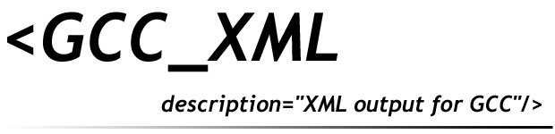

|  | |
|
Home Sponsors Running Download Install FAQ Bug Tracker News Links Mailing List Copyright |
Installing GCC-XML has been significantly
simplified by combining a patched GCC with the GCC-XML front-end
in a single source tree. For those interested, the
old download page is still
available.
Latest Release (0.6.0)THIS RELEASE WAS CREATED IN Februrary 2004 AND IS NOW VERY OLD. UNFORTUNATELY I HAVE NOT HAD TIME TO DO ANOTHER RELEASE. PLEASE USE THE CVS VERSION BELOW. DO NOT REPORT PROBLEMS WITH THIS RELEASE. A stylesheet contributed by Ivan Kissiov to help display the dumped xml: gccxml.xsl.An unofficial DTD contributed by Paul Ross and Martin Piskernig: gccxml-2004-11-19.dtd.txt. No attempt will be made to keep the output conforming to this DTD and it has not been checked by a GCC-XML author. Development Version from CVSCVS may be obtained from the CVS Home Page. On Windows, you may wish to use the Cygwin tools or WinCVS which provides a GUI to CVS.The source is accessed by checking out a read-only version of the GCC-XML source code. Use the following commands.
cvs -d :pserver:anoncvs@www.gccxml.org:/cvsroot/GCC_XML login
Follow this command by checking out the source code: Warning for modem users: the source tree is over 40 MB because it includes a copy of parts of the GCC source tree. Older VersionsPlease see the old download page for GCC-XML version 0.4 and below. |